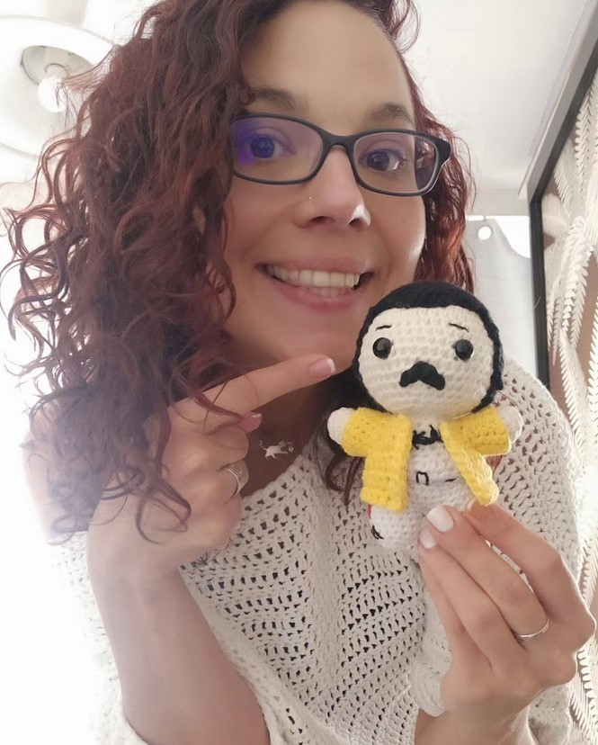

History of crochet

The word crochet originates from the French word croche, or hook, but the technique predates the French.
Crocheting is defined as:
Needlework consisting of the interlocking of looped stitches formed with a single thread and a hooked needle - Merriam-Webster
In the modern western world, crocheting is inspired by the long-standing Asian, Middle Eastern, and African crochet styling traditions dating back thousands of years.
It has evolved across civilizations and centuries as a means of creating necessary items, such as hats, socks, and blankets to modern uses for mostly leisure and luxury goods.
Funny how times are changing, if you see knitting needles or crochet hooks, automatically you would think they belong to an (elderly) woman.
(Spoiler alert!) However it seems from the "History of Knitting" that it was invented by men and
performed by them as well for centuries.
So huge shout out for the (nowadays performing) male artists, keep going despite the social prerequisites!
What is MicArt?
The history of MicArt goes back until 2010 when I've finished nail art school. As of my nickname - got from my dad, when I was 2 years old -
is Mica since decades, when I finished nail art school I "had to come up" with a name, which represents me and the creative side of mine.
However in 2017, after a tragic family event I felt: I need something to keep my mind and heart in peace. To express my feelings, shift my focus on something, which brings joy, keeps my ruminating brain busy and actually
englightens my days, weeks. Context: my late grandmother's hands (from father end) were magical. She cooked and baked like and angel, there was no material, which she could not turn into
something beautiful, useful, funny or simply decorative. Beside sewing, knitting and embroidered, she crocheted.
As we say in Hungarian: the blood won't turn to water - which means, the talent you have in your "genetics" (rather let's say, from your anchestors)
are in you as well. So though, why not to give try?
So I took my phone/laptop and searched on Youtube/Google to find video tutorials for beginners and fast forward today: here I am. At the point where crochet is not a simple passion anymore,
more like a lifestyle, a way of life - which of course escalated into learning punchneedling and yes: I've jus recently bought my first sewing maschine.